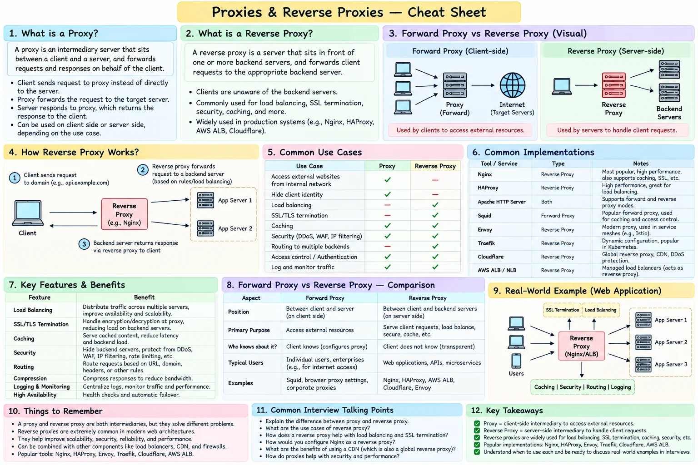

Topic · System Design Fundamentals
Forward Proxy and Reverse Proxy
A forward proxy acts for clients going out; a reverse proxy acts for servers taking traffic in.
Cheat sheet


Quick Revision
- Forward proxy represents clients: controls egress, hides clients, enforces outbound policy.
- Reverse proxy represents backends: hides servers, gives a stable ingress endpoint.
- Reverse proxy jobs: routing, TLS termination, caching, authentication, compression, load balancing.
- A reverse proxy may load-balance, but not every reverse proxy distributes traffic.
Design checklist
- Requirements - protocol, TLS, routing, caching, authentication, client-IP visibility.
- Estimation - concurrent connections, RPS, bandwidth, TLS handshakes, memory per connection.
- High-level design - clients → reverse proxy / load balancer → services; internal clients → forward proxy → internet.
- Deep dives - keep-alive, streaming, buffering, retries, timeouts, forwarding headers, proxy redundancy.
Trade-offs
| Choice | Benefit | Cost / risk |
|---|---|---|
| L7 reverse proxy | Rich routing, TLS, authentication, caching | More CPU, latency, and configuration complexity |
Failure modes
- Proxy is a single point of failure - multiple instances across zones, managed load balancing, DNS/global failover.
- Client spoofs
X-Forwarded-For- the trusted edge proxy strips incoming forwarding headers and writes authoritative values.
Interview practice
Answer aloud, then reveal.
rtCamp (2025): design a load balancer - discuss reverse proxying, traffic distribution, fault tolerance.
Redundant L4/L7 reverse proxies, health checks, round robin or least connections, TLS termination, connection draining, metrics, automatic backend removal and recovery.